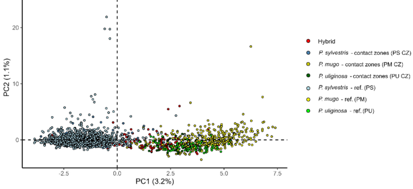
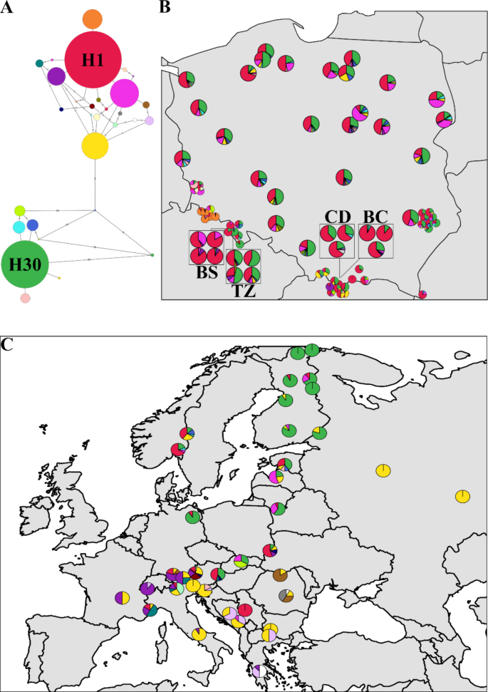

01 / GENE FLOW
Species boundaries
& hybridisation
How do species remain distinct while exchanging genes? I study contact zones between Scots pine and the Pinus mugo complex.
Explore the researchPOPULATION & EVOLUTIONARY GENOMICS
Understanding evolution.
Informing conservation.
I study how evolutionary history, gene flow and adaptation shape the genetic diversity of forest trees.
Assistant Professor · Adam Mickiewicz University
Poznań, Poland

I am a population geneticist interested in the processes that generate and maintain diversity in forest trees.
Based at the Institute of Environmental Biology, Adam Mickiewicz University in Poznań, I combine field sampling, genomic data and computational analyses to study adaptation, speciation and hybridisation, particularly in European pines.
My research connects evolutionary questions with the conservation of threatened species and the management of forest genetic resources.
University profile
Using genomic variation to understand how tree populations diverge, interact and respond to their environment.

01 / GENE FLOW
How do species remain distinct while exchanging genes? I study contact zones between Scots pine and the Pinus mugo complex.
Explore the research
02 / POPULATION HISTORY
What does present-day variation reveal about the past? I use nuclear and organellar DNA to investigate population history and recolonisation.
Explore the research03 / CHANGING ENVIRONMENTS
How might tree populations respond to a changing climate? I examine adaptive variation and its implications for forest genetic resources.
Explore the researchFigures: Szczepański, Łabiszak, Lasek & Wachowiak (2024). CC BY 4.0. Displayed without alteration.
Research code on GitHubRecent papers and milestones.
How admixture keeps Scots pine adaptable, led by Martyna Lasek.
For. Ecol. Manag. →Scots pine adaptation and genomic vulnerability under projected climate change.
Evol. Appl. ↗Repeatable genomic patterns across three pine hybrid zones.
Mol. Ecol. ↗ · Data ↗Sebastian Szczepański defended his PhD on pine hybrid zones. Proud auxiliary supervisor.
Mentoring ↓TL;DR Genomic evidence from three contact zones reveals repeatable patterns of hybridisation among closely related pines.
TL;DR Genomic variation is associated with temperature, with projected climate shifts indicating a greater risk of maladaptation in northern populations.
TL;DR Admixture was detected in contact zones, while the sampled allopatric populations showed no evidence of mixed ancestry.
Courses I teach at Adam Mickiewicz University in Poznań, from evolutionary questions to practical analysis.
Working with scientific data in R.
Molecular approaches to ecological questions.
Conservation genetics.
Population genomics.
Population and evolutionary genomics.
Biotaxonomy.
Biotechnology of woody plants.
Course names follow the AMU teaching profile .
Mentoring
Interested in a thesis on pine genomics, hybrid zones or conservation genetics? I'm happy to talk.
Get in touchGenetic diversity of the hybrid zones and allopatric populations of closely related pine species (genus Pinus)
For research collaborations, questions about my work
or teaching enquiries, get in touch.
BASED AT
Institute of Environmental Biology
Faculty of Biology
Adam Mickiewicz University in Poznań
Poznań, Poland